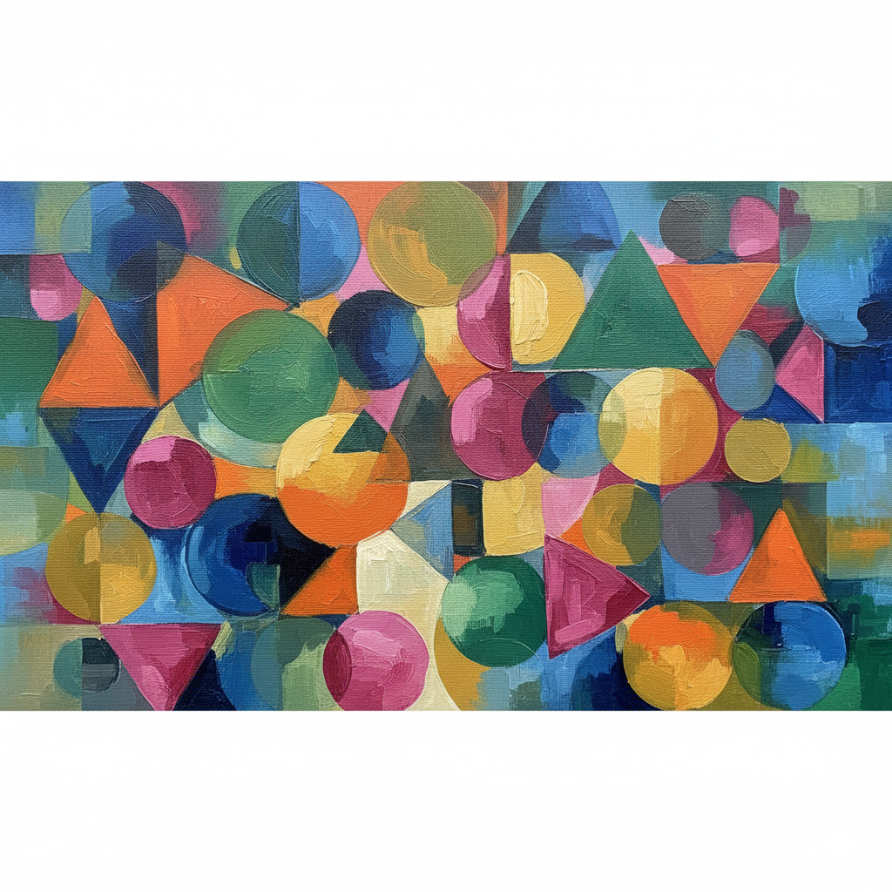

Connecting Vision and Language: A Deep Dive into OpenAI’s CLIP

For years, the gold standard in computer vision involved training models on massive, manually labeled datasets like ImageNet. While incredibly successful, this approach has a fundamental limitation: the model’s knowledge is confined to the specific categories it was trained on. In a parallel revolution, natural language processing (NLP) models like GPT-3 moved towards pre-training on the vast, raw text of the internet, learning flexible and generalizable knowledge. The OpenAI CLIP paper asks a powerful question: can we bring the NLP pre-training paradigm to computer vision and learn from the rich, descriptive text that naturally accompanies images online?
{kind=link}
Abstract
{kind=link}
The Problem: The “Fixed Set” Limitation of Vision Models
The authors start by highlighting a long-standing challenge in computer vision.
State-of-the-art computer vision systems are trained to predict a fixed set of predetermined object categories. This restricted form of supervision limits their generality and usability since additional labeled data is needed to specify any other visual concept.
For years, the standard approach was to train a model on a dataset with a predefined list of categories, like the 1000 object classes in the famous ImageNet dataset. If a model was trained to recognize “cats,” “dogs,” and “cars,” it had no inherent ability to recognize a “horse” or a “bicycle.” To teach it a new concept, you had to go back, collect and label thousands of new images, and fine-tune or retrain the model. This process is expensive, slow, and fundamentally limits a model’s real world usefulness. The world is not a fixed set of 1000 categories.
The Solution: Learning from Natural Language
Instead of relying on these rigid, curated datasets, the authors propose a more natural and scalable alternative.
Learning directly from raw text about images is a promising alternative which leverages a much broader source of supervision. We demonstrate that the simple pre-training task of predicting which caption goes with which image is an efficient and scalable way to learn SOTA image representations from scratch on a dataset of 400 million (image, text) pairs collected from the internet.
This is the core idea of CLIP. The internet is filled with images, and those images are often paired with descriptive text: captions, articles, titles, etc. This text provides a rich source of information, or what the authors call supervision. Instead of teaching a model that an image maps to a single label like dog, we can teach it that an image maps to a descriptive phrase like "a photo of a golden retriever playing in the park".
By training on a massive, custom-built dataset of 400 million of these (image, text) pairs, the model learns a much more nuanced and flexible understanding of visual concepts. The goal of the training is simple: given a batch of images and a batch of captions, the model must figure out which caption correctly describes which image.
The Payoff: True Zero-Shot Transfer
This training approach unlocks the model’s most powerful capability.
After pre-training, natural language is used to reference learned visual concepts (or describe new ones) enabling zero-shot transfer of the model to downstream tasks.
Because CLIP learns to connect the content of an image to the meaning of text, you can now give it classification tasks it has never seen before, simply by describing the classes in plain English. This is called zero-shot transfer.
Imagine you want to classify photos of different dog breeds. With a traditional model, you’d need a labeled dataset of thousands of dog photos. With CLIP, you simply provide the text descriptions, like "a photo of a golden retriever", "a photo of a poodle", "a photo of a husky", and the model can instantly classify images into these new categories without seeing a single labeled example. It’s using its pre-trained knowledge to connect what it “sees” in the image to the text you provide.
The Evidence: It Actually Works
The authors back up this powerful claim with extensive testing.
We study the performance of this approach by benchmarking on over 30 different existing computer vision datasets… For instance, we match the accuracy of the original ResNet-50 on ImageNet zero-shot without needing to use any of the 1.28 million training examples it was trained on.
This is the headline result. They tested CLIP’s zero-shot performance across a huge range of tasks, from recognizing objects and actions to reading text (OCR). The most stunning demonstration is its performance on ImageNet. Without being trained on any of the 1.28 million ImageNet training images, CLIP was able to match the accuracy of a fully-supervised ResNet-50 model that was explicitly trained on that data. This proves that learning from natural language supervision is not just a clever idea, but a highly effective method for building general-purpose visual models.
One of the most profound ideas in the CLIP paper is that the model does not have a fixed list of categories it can recognize. This is a radical departure from how most computer vision models worked before it. To truly appreciate this, let’s compare the traditional approach to CLIP’s new paradigm.
The Traditional Approach: A Built-in Classifier
Think of a classic image classification model like a ResNet-50 trained on the ImageNet dataset. Its architecture is typically composed of two main parts:
- Feature Extractor: A deep stack of convolutional layers that process an input image and convert it into a high level feature representation (essentially, a vector or list of numbers).
- Classifier Head: A final, fully connected layer at the very end of the network. For a model trained on ImageNet, this layer has exactly 1000 outputs, one for each of the 1000 specific classes in the dataset.
The model is trained to make the output corresponding to the correct class have the highest score. This structure is rigid. The model can only ever predict one of the 1000 classes it was explicitly built to recognize. If you want it to recognize a new object, you have to replace or retrain this final layer.
The CLIP Approach: A Dynamic Classifier from Language
CLIP gets rid of the fixed classifier head entirely. Instead, it learns a shared space where both images and text can coexist. It does this using two separate encoders:
- Image Encoder: Takes an image and turns it into a feature vector.
- Text Encoder: Takes a piece of text (a word, a phrase, or a sentence) and turns it into a feature vector.
The key is that both models are trained together to place the vectors for a matching (image, text) pair as close as possible in this shared space, which we can call a “multimodal embedding space”. Think of it as a universal “concept space” where visual and textual ideas that mean the same thing are placed near each other.
So, when you ask CLIP to perform a classification task, here is what happens behind the scenes:
- Step 1: Encode the Image. You feed a single image (for instance, a photo of a cat) into CLIP’s Image Encoder. The output is a single vector that numerically represents the content of the image.
- Step 2: Encode the Potential Classes. You create a list of text descriptions for all your target classes. For example:
"a photo of a dog","a photo of a car","a photo of a cat". You then feed this list into CLIP’s Text Encoder. The output is a set of vectors, one for each text description. - Step 3: Find the Best Match. CLIP then calculates the similarity (specifically, the cosine similarity) between the one image vector and every single one of the text vectors.
- Step 4: Make the Prediction. The text description whose vector is most similar to the image vector is the model’s prediction. In our example, the vector for
"a photo of a cat"would be “closest” to the image vector, making that the final classification.
The “classifier” is not a static part of the model’s architecture; it is something you create dynamically at inference time just by providing text. This is what gives CLIP its incredible flexibility. You can swap out your list of classes for any other visual concept you can describe with words, all without retraining the model. This is the essence of its powerful zero shot capability.
1. Introduction and Motivating Work
{kind=link}
{kind=link}
The NLP Revolution: A Blueprint for Vision
To understand the genius of CLIP, we first have to look away from computer vision and towards its sister field, Natural Language Processing. The authors of CLIP didn’t invent their core strategy from scratch; they brilliantly adapted a paradigm that had already proven phenomenally successful in the world of text.
Pre-training methods which learn directly from raw text have revolutionized NLP over the last few years (Dai & Le, 2015; Peters et al., 2018; Howard & Ruder, 2018; Radford et al., 2018; Devlin et al., 2018; Raffel et al., 2019).
The authors are referencing a seismic shift in NLP. Before this “revolution,” NLP models were often trained for a specific task (e.g., sentiment analysis) on a relatively small, task specific dataset. The breakthrough was the idea of pre-training: first, train a massive model on a gigantic corpus of raw, unlabeled text from the internet. The goal wasn’t to perform a specific task, but to learn the underlying patterns, grammar, and concepts of language itself. This pre-trained model could then be quickly adapted (or “fine-tuned”) for specific tasks with much less data and achieve state of the art results.
Task-agnostic objectives such as autoregressive and masked language modeling have scaled across many orders of magnitude in compute, model capacity, and data, steadily improving capabilities.
This sentence explains how this pre-training works. Since you don’t have explicit labels, you need a “self-supervised” or task-agnostic objective. This means the learning task is generated from the data itself, not from human labels. The two most famous objectives are:
- Autoregressive Language Modeling: This simply means “predicting the next word.” The model is given a sequence of text like “The cat sat on the” and its goal is to predict the next word, “mat”. This is the fundamental principle behind models like GPT (Generative Pre-trained Transformer).
- Masked Language Modeling (MLM): Instead of just predicting the next word, this approach takes a sentence, masks out a word (e.g., “The cat [MASK] on the mat”), and tasks the model with predicting the missing word. This forces the model to learn context from both the left and the right, and it’s the core idea behind the hugely influential BERT model.
These simple, scalable objectives allowed researchers to throw massive amounts of data and compute at their models, leading to rapid improvements.
The development of “text-to-text” as a standardized input-output interface … has enabled task-agnostic architectures to zero-shot transfer to downstream datasets removing the need for specialized output heads or dataset specific customization. Flagship systems like GPT-3 … are now competitive across many tasks with bespoke models while requiring little to no dataset specific training data.
This is the ultimate payoff of the NLP paradigm. By framing every problem as a “text-in, text-out” task, models became incredibly flexible. For example, instead of training a specialized translation model, you could just feed a model like Google’s T5 the text: "translate English to German: Hello, how are you?" and it would learn to output: "Hallo, wie geht es Ihnen?".
This flexibility, supercharged by massive scale, led to models like GPT-3. GPT-3 is a single, pre-trained model that can perform a staggering variety of tasks it was never explicitly trained for (summarization, coding, creative writing, classification) simply by being given the right text prompt. It doesn’t need specialized “output heads” (like the fixed classifier layers we discussed earlier) and requires little to no task specific training data.
In essence, the authors are setting the stage by saying: “Look at the incredible power and flexibility NLP unlocked by moving from small, labeled datasets to massive, self-supervised pre-training. We are going to do the same thing for computer vision.”
While both are massive Transformer-based models pre-trained on web-scale text, GPT-3 and T5 are built on different fundamental principles that make them better suited for different kinds of tasks.
At a high level, you can think of the difference with this analogy:
- GPT-3 is a brilliant autocomplete. It is an expert at continuing a piece of text. Its core strength is open-ended generation.
- T5 is a universal translator. It is an expert at transforming an input text into a desired output text. Its core strength is transformation and structured tasks.
Let’s look at the key technical differences that lead to this behavior.
1. Training Objective: The Core Task
This is the most important distinction.
GPT-3 (Autoregressive): As we discussed, GPT-3 is trained on an autoregressive objective, which simply means “predict the next word.” It reads text from left to right and learns to predict the most probable next token given the preceding context. It never sees “the future”; it only ever looks backward.
T5 (Text-to-Text Denoising): T5 (Text-to-Text Transfer Transformer) is trained on a “fill-in-the-blank” objective, inspired by BERT’s Masked Language Modeling. During pre-training, it takes a clean sentence, randomly “corrupts” it by masking out spans of text, and is then asked to reconstruct the original, uncorrupted text.
For example:
- Original:
Thank you for inviting me to the party last week. - Corrupted Input to T5:
Thank you <X> me to the party <Y> week. - T5’s Target Output:
<X> for inviting <Y> last
This “denoising” objective forces the model to become very good at understanding the full context of a sentence to fill in the missing parts. This makes it a natural fit for tasks that require transforming an input into an output.
- Original:
2. Model Architecture
Their training objectives lead to different choices in the underlying Transformer architecture.
GPT-3 (Decoder-Only): Because its only job is to generate the next word based on past context, GPT-3 uses only the decoder blocks from the original Transformer architecture. The decoder’s “masked self-attention” mechanism is perfectly suited for this, as it ensures that when predicting a word, the model can only attend to the words that came before it.
T5 (Encoder-Decoder): T5 uses the full encoder-decoder architecture from the original Transformer.
- The Encoder reads the entire corrupted input sequence at once (e.g.,
Thank you <X> me to the party...). This allows it to build a complete, bidirectional understanding of the context. - The Decoder then takes the encoder’s representation and generates the target output (e.g.,
<X> for inviting...) in an autoregressive, word-by-word fashion. This structure is ideal for sequence-to-sequence tasks like translation and summarization.
- The Encoder reads the entire corrupted input sequence at once (e.g.,
3. Typical Use Case
Their design differences make them shine in different scenarios.
- GPT-3 is best for:
- Open-ended generation: Creative writing, brainstorming, writing code, creating long-form content.
- Few-shot prompting: Its massive scale gives it an incredible ability to perform tasks just by seeing a few examples in the prompt, without any retraining.
- Chatbots and conversational AI.
- T5 is best for:
- Transformation tasks: Summarization (long text in, short text out), translation (English in, German out), question answering (question in, answer out).
- Fine-tuning: It serves as a powerful, general-purpose base model that is explicitly designed to be fine-tuned on specific datasets to become an expert at a particular transformation task.
Summary Table
| Feature | GPT-3 (and GPT family) | T5 (and BERT-style models) |
|---|---|---|
| Primary Goal | Generation | Transformation |
| Training Objective | Autoregressive (Predict next word) | Denoising (Fill in the blanks) |
| Architecture | Decoder-Only | Encoder-Decoder |
| Data Flow | Unidirectional (looks at past context) | Bidirectional (looks at all context) |
| Best For | Creative writing, few-shot prompting | Summarization, translation, fine-tuning |
The CLIP paper references the innovations from both of these camps. It takes the idea of massive scale and flexible, zero-shot transfer from the GPT world and applies it to a task that is conceptually more like a transformation (image in, text description out).
This is a brilliant question that highlights a key development in modern AI. The base GPT-3 model is, at its core, an autoregressive, “next-word predictor.” In contrast, models like T5 are built with an encoder-decoder structure that is a more natural architectural fit for summarization. So how can ChatGPT, which is based on the GPT architecture, be so good at it?
The answer lies in two concepts: emergent abilities from scale and a powerful fine-tuning process called instruction tuning (and RLHF).
1. Emergent Abilities from Scale
A base GPT model is trained on a simple goal: predict the next word. But to get really good at this task across a dataset as vast and diverse as the internet, the model cannot simply memorize sequences. It is forced to build a deep, internal understanding of language and the world. It must learn:
- Grammar and Syntax: The rules of language.
- Semantic Concepts: The meaning of words and how they relate (e.g., that “king” - “man” + “woman” is close to “queen”).
- Factual Knowledge: Information about people, places, and events.
- Context and Cohesion: How sentences and paragraphs logically follow each other.
To accurately predict the next word of a complex article, the model must implicitly keep track of the article’s main topic and key points. In a sense, the ability to “understand” for the purpose of summarization is an emergent property that arises as a side effect of getting extremely good at next-word prediction at a massive scale.
The base model saw countless examples of articles followed by abstracts or summaries in its training data. So, if you prompt it correctly (e.g., by providing an article followed by TL;DR:), it recognizes this pattern and knows that the most probable “next words” are a condensed version of the preceding text. It’s completing a pattern it has learned.
2. Instruction Tuning and RLHF: The Secret Sauce of ChatGPT
This is the most critical factor. ChatGPT is not the base GPT-3 model. It is a variant that has gone through an extensive, second phase of training designed specifically to make it a helpful assistant.
This process involves two main steps:
Instruction Tuning (Supervised Fine-Tuning): First, the base GPT model is fine-tuned on a high-quality, curated dataset of
(instruction, desired_output)pairs. These were created by human labelers. For summarization, this dataset would contain thousands of examples like:Instruction:
"Summarize the following scientific abstract for a fifth-grader: [long, complex abstract text]"Desired Output:
"[simple, easy-to-understand summary]"By training on millions of such instructions across thousands of different tasks, the model learns to generalize the concept of following instructions, not just completing patterns.
Reinforcement Learning from Human Feedback (RLHF): This is the step that truly refines the model’s behavior. In this stage, the model generates several different responses to a single prompt (e.g., four different summaries). A human rater then ranks these responses from best to worst. This feedback is used to train a separate “reward model.” Finally, the main GPT model is fine-tuned again using reinforcement learning to maximize the score it gets from this reward model.
In simple terms, RLHF trains the model to produce outputs that humans find helpful, accurate, and well-written.
The Bottom Line
You can think of it like this:
- Base GPT-3 is like a brilliant student who has read every book in the library. They have all the knowledge, but they are not trained to apply it to specific tasks for you. They might answer your question, or they might just continue your sentence in a creative but unhelpful way.
- ChatGPT is that same brilliant student after they have completed a rigorous apprenticeship on how to be the world’s best assistant. They have been explicitly trained to understand and follow instructions, including “summarize this,” making them far more reliable and useful for such tasks.
So, while T5’s architecture is a natural fit for summarization, ChatGPT’s massive scale and, more importantly, its specialized instruction-following and RLHF training give it the powerful ability to perform this and many other structured tasks exceptionally well.
The Central Question: Can Vision Learn from NLP’s Playbook?
{kind=link}
After establishing the success of pre-training on raw web text in NLP, the authors pivot to make their main point: computer vision has not yet embraced this paradigm, and perhaps it should.
These results suggest that the aggregate supervision accessible to modern pre-training methods within web-scale collections of text surpasses that of high-quality crowd-labeled NLP datasets.
This is a powerful claim. The authors are arguing that the sheer volume and diversity of text on the internet (the “aggregate supervision”) is a more potent teacher than smaller, meticulously human-labeled datasets. Think of it this way: a “crowd-labeled” dataset might have thousands of perfectly annotated examples for a specific task like question answering. But the internet has trillions of words discussing nearly every topic imaginable, from cooking to quantum mechanics to celebrity gossip. The authors’ claim is that the raw breadth and variety of this web-scale data provides a richer, more generalizable learning signal than any clean, but narrow, dataset ever could. Quantity and variety have a quality all their own.
Having made this point about NLP, they immediately contrast it with computer vision:
However, in other fields such as computer vision it is still standard practice to pre-train models on crowd-labeled datasets such as ImageNet (Deng et al., 2009).
This sentence sets up the central tension of the paper. While NLP has moved on to learning from the messy, vast internet, computer vision’s most foundational models are still pre-trained on datasets like ImageNet. ImageNet is a monumental achievement in data collection, consisting of over 14 million images hand-labeled by humans (via crowdsourcing platforms like Amazon Mechanical Turk) into thousands of object categories. It was the dataset that fueled the deep learning revolution.
However, from the perspective of the CLIP authors, it represents the “old” way of doing things: a finite set of categories, expensive to create, and fundamentally limited in scope compared to the near-infinite variety of visual information online.
This contrast leads them to state their research question in the clearest possible terms:
Could scalable pre-training methods which learn directly from web text result in a similar breakthrough in computer vision? Prior work is encouraging.
This is it. This is the thesis of the entire paper. The authors are proposing to directly apply the successful NLP blueprint to the field of computer vision. They are asking: what happens if we stop training vision models on fixed sets of categories and instead train them to connect images to the raw, natural language that accompanies them all over the internet?
The final sentence, “Prior work is encouraging,” is a deliberate and important piece of scientific storytelling. They are signaling that while their approach is ambitious, they are not the first to have this idea. They are building on a history of prior research, which they will now use to motivate their specific approach.
Standing on the Shoulders of Giants: A History of Vision-Language Models
{kind=link}
{kind=link}
The idea of teaching a computer vision system using natural language is not new. In this section, the authors take us on a two-decade tour of the research that paved the way for CLIP, showing a clear evolution from simple ideas to the sophisticated techniques that made their breakthrough possible.
The Early Pioneers
The journey starts over 20 years ago, demonstrating just how long researchers have been chasing this goal.
Over 20 years ago Mori et al. (1999) explored improving content based image retrieval by training a model to predict the nouns and adjectives in text documents paired with images.
This is the foundational concept in its simplest form. “Content-based image retrieval” is the task of finding similar images to a query image. Mori et al. realized that the text accompanying an image (like in an article) provides valuable clues. By training a model to associate parts of an image with specific words (nouns and adjectives), they could improve their system. This early work established the core principle: text paired with images is a powerful source of supervision.
The idea continued to evolve with increasing sophistication through the 2000s and early 2010s with work from Quattoni et al. (2007) and Srivastava & Salakhutdinov (2012), who explored more advanced techniques for learning “deep representations” from multimodal (i.e., multiple types of data, like text and images) features.
The Modern Era: CNNs Meet Text
The real acceleration began when modern deep learning architectures, specifically Convolutional Neural Networks (CNNs), were applied to the problem.
Joulin et al. (2016) modernized this line of work and demonstrated that CNNs trained to predict words in image captions learn useful image representations. They converted the title, description, and hashtag metadata of images in the YFCC100M dataset … into a bag-of-words multi-label classification task and showed that pre-training AlexNet … learned representations which preformed similarly to ImageNet-based pre-training on transfer tasks.
This was a major milestone. Joulin et al. took a large dataset of images from Flickr, each with associated text (titles, hashtags, etc.). They treated this as a massive classification problem using a bag-of-words (BoW) approach.
- Bag-of-Words (BoW): This is a simple way to represent text. Imagine you take a sentence, throw all the words into a bag, and shake it up. You ignore grammar and word order, and just count the occurrences of each word. The model’s task was to look at an image and predict the “bag of words” that appeared in its description.
The crucial finding was that an AlexNet model (the CNN that kicked off the deep learning boom in 2012) pre-trained this way learned visual features that were just as useful as those learned from the meticulously-labeled ImageNet dataset. This was strong evidence that learning from messy, real-world text could compete with learning from clean, human-labeled categories.
Li et al. (2017) then extended this approach to predicting phrase n-grams in addition to individual words and demonstrated the ability of their system to zero-shot transfer to other image classification datasets…
Li et al. took the next logical step. Instead of just predicting individual words (1-grams), they trained their model to predict n-grams (sequences of n words). For example, instead of predicting “golden” and “retriever” separately, the model could predict the 2-gram “golden retriever.” This captures more meaning. More importantly, they were one of the first to show that this approach could enable zero-shot transfer. They could create a classifier for new, unseen categories just by describing them with text. While the performance was low (as the paper later notes), it was a critical proof of concept.
The Immediate Predecessors
The final pieces of the puzzle came from very recent work that incorporated the latest NLP architectures and training techniques.
Adopting more recent architectures and pre-training approaches, VirTex (Desai & Johnson, 2020), ICMLM (Bulent Sariyildiz et al., 2020), and ConVIRT (Zhang et al., 2020) have recently demonstrated the potential of transformer-based language modeling, masked language modeling, and contrastive objectives to learn image representations from text.
These papers, published just before CLIP, brought the vision-language field right up to the cutting edge. They incorporated ideas from the NLP revolution we discussed earlier, like using powerful Transformer models to understand the text.
Most importantly, they explored contrastive objectives. This is a key concept for understanding CLIP.
- Contrastive Objectives: Instead of a predictive task (e.g., “predict the exact words in this caption”), a contrastive task is a matching task. The model is given an image, one correct text caption, and several incorrect captions. Its only job is to learn which text is the correct match. It learns to pull the representations of the correct (image, text) pair together in its embedding space, while pushing the representations of incorrect pairs far apart. This is often a much more efficient and robust learning signal than trying to predict every single word correctly.
These papers served as the final “proofs of concept,” showing that combining modern architectures with a contrastive learning objective was a promising path forward. The stage was now set for the CLIP authors to ask: what happens if we take this exact approach and scale it up… way up?
The Performance Gap and the “Pragmatic Middle Ground”
{kind=link}
If learning from natural language is such a great idea, why wasn’t everyone already doing it? The authors directly address this by pointing to a simple, unavoidable fact: the performance just wasn’t good enough.
While exciting as proofs of concept, using natural language supervision for image representation learning is still rare. This is likely because demonstrated performance on common benchmarks is much lower than alternative approaches. For example, Li et al. (2017) reach only 11.5% accuracy on ImageNet in a zero-shot setting.
This is the sober reality check. The earlier work by Li et al. was a fantastic proof of concept for zero-shot transfer, but an 11.5% accuracy on ImageNet is, to put it bluntly, terrible. The authors drive this point home by providing two stark comparisons:
- It was far below the 88.4% accuracy of the state-of-the-art models at the time.
- It was even worse than the 50% accuracy of “classic” (pre-deep learning) computer vision methods from nearly a decade prior.
With such poor performance, it’s no wonder that this approach remained a niche research area rather than a mainstream technique. The promise of flexibility was overshadowed by the reality of poor results.
However, this didn’t stop researchers from using large-scale, internet-style data. Instead, they found a successful “middle ground” by using a more targeted, albeit less flexible, form of supervision.
Instead, more narrowly scoped but well-targeted uses of weak supervision have improved performance. Mahajan et al. (2018) showed that predicting ImageNet-related hashtags on Instagram images is an effective pre-training task.
This introduces a key concept: weak supervision. This term refers to using labels that are noisy, imprecise, or not perfectly curated, in contrast to the “gold-standard” clean labels of a dataset like ImageNet. The key insight from Mahajan et al. was to leverage this at a massive scale.
- What they did: They trained a model on billions of public Instagram images. The “label” for each image was simply the set of hashtags its user had applied.
- Why it’s “weak”: Hashtags are very noisy. An image of a cat at the beach might be tagged with
#cat,#beach,#sunset, and#vacation. - Why it’s “well-targeted”: Crucially, they filtered the hashtags to only include those relevant to the 1000 ImageNet classes.
- The Result: This was an incredibly effective pre-training strategy. A model pre-trained on these noisy hashtags and then fine-tuned on ImageNet achieved a new state-of-the-art accuracy, boosting performance by over 5%.
This was followed by similar work that further validated the approach:
Kolesnikov et al. (2019) and Dosovitskiy et al. (2020) have also demonstrated large gains on a broader set of transfer benchmarks by pre-training models to predict the classes of the noisily labeled JFT-300M dataset.
This work used JFT-300M, a massive internal Google dataset with 300 million images and noisy, automatically generated labels for thousands of classes. Just like the Instagram work, pre-training on this huge, “weakly” labeled dataset before fine-tuning on smaller, clean datasets led to huge performance gains.
So, the authors have established a clear story:
- The dream of learning from general, arbitrary text (like captions) was exciting but performed poorly.
- The pragmatic approach of learning from massive but targeted weak labels (like hashtags or noisy class labels) was a huge success for pre-training.
This sets the stage for the authors to critique this successful “middle ground” and introduce their own approach as the true solution.
The Problem with the Middle Ground: A Critique of Weak Supervision
The successful pre-training methods from Instagram and Google (JFT-300M) represented a huge step forward. The authors acknowledge this, calling it the “pragmatic middle ground.”
This line of work represents the current pragmatic middle ground between learning from a limited amount of supervised “gold-labels” and learning from practically unlimited amounts of raw text.
Think of it as a spectrum of supervision:
- One Extreme: A small set of high-quality, human-verified “gold labels” (e.g., ImageNet).
- The Other Extreme: A nearly infinite amount of messy, unstructured, raw text paired with images (the authors’ ultimate goal).
- The Middle Ground: Massive datasets of “weakly” labeled images (e.g., Instagram hashtags). This approach successfully captured the scale of the internet data but constrained the supervision to be more like traditional labels.
However, the authors argue that this pragmatic solution comes with a major compromise that limits its ultimate potential.
However, it is not without compromises. Both works carefully design, and in the process limit, their supervision to 1000 and 18291 classes respectively. Natural language is able to express, and therefore supervise, a much wider set of visual concepts through its generality.
This is the core of the critique. Even though these models were trained on billions of images, the supervision was still a fixed list of categories. It might be a much bigger list than ImageNet’s 1000 classes, but it is a list nonetheless. This fundamentally restricts what the model can learn. If a concept isn’t in your list of 18,291 target labels, the model has no way to learn it.
Natural language, by contrast, is not a list. It is a general-purpose system for describing the world. It can express an almost infinite variety of visual concepts: objects (“dog”), actions (“a dog jumping”), attributes (“a fluffy brown dog”), relationships (“a dog chasing a cat”), and abstract ideas (“a lonely dog”). This is the expressiveness and generality the authors want to capture.
The second, more technical limitation is baked into the architecture of these “middle ground” models.
Both approaches also use static softmax classifiers to perform prediction and lack a mechanism for dynamic outputs. This severely curtails their flexibility and limits their “zero-shot” capabilities.
This is a crucial technical point. Let’s break it down:
- Static Softmax Classifier: As we discussed in our earlier note, this refers to the final layer of a traditional classification model. It has a fixed number of outputs, one for each class in the predefined list. The softmax function then converts these outputs into a probability distribution over that fixed list.
- Lack of Dynamic Outputs: Because the classifier’s structure is fixed, it cannot produce outputs for new, unseen classes. It is architecturally locked into its original set of categories.
This architectural choice makes true, flexible zero-shot transfer impossible. You cannot simply give the model a new text description at test time and have it classify an image, because there is no output neuron corresponding to that new concept. The model’s knowledge is trapped behind this rigid, static classifier.
In essence, the authors are arguing that while the weak supervision approach was a powerful trick for boosting performance on existing benchmarks, it was an evolutionary dead end. To achieve their goal of a truly flexible, general-purpose vision model, they needed to abandon the fixed-classifier paradigm entirely, a problem that would require a different approach to both the data and the model.
Closing the Gap with Scale: Introducing CLIP
The authors now identify the final, crucial difference between the successful “weak supervision” models and the less successful attempts at learning from general natural language: scale.
A crucial difference between these weakly supervised models and recent explorations of learning image representations directly from natural language is scale. While Mahajan et al. (2018) and Kolesnikov et al. (2019) trained their models for accelerator years on millions to billions of images, VirTex, ICMLM, and ConVIRT trained for accelerator days on one to two hundred thousand images.
This is a critical insight. The successful models weren’t just successful because they used targeted hashtags; they were successful because they were trained on an absolutely colossal scale.
- Weak Supervision Models (Instagram, JFT-300M): Trained on billions of images, requiring accelerator-years of compute. An “accelerator-year” is the equivalent of running a single high-end GPU or TPU for a full year, 24/7.
- Natural Language Supervision Models (VirTex, etc.): Trained on only hundreds of thousands of images, requiring only accelerator-days of compute.
The authors are hypothesizing that the previous attempts at learning from general language failed not because the idea was wrong, but because they were orders of magnitude too small. The rich, noisy, and complex signal of natural language might require a massive amount of data to work effectively.
This leads directly to their own contribution.
In this work, we close this gap and study the behaviors of image classifiers trained with natural language supervision at large scale. Enabled by the large amounts of publicly available data of this form on the internet, we create a new dataset of 400 million (image, text) pairs and demonstrate that a simplified version of ConVIRT trained from scratch, which we call CLIP, for Contrastive Language-Image Pre-training, is an efficient method of learning from natural language supervision.
Here, they lay out the core components of their work:
- Close the Scale Gap: They are the first to attempt training with general natural language supervision at the same massive scale as the successful weak supervision methods.
- A New Dataset: To do this, they had to build their own dataset from scratch, collecting 400 million image-text pairs from the internet. This is a monumental engineering effort and a key contribution in itself.
- The Method (CLIP): They name their model CLIP, which stands for Contrastive Language-Image Pre-training. They explicitly state it’s a simplified version of the ConVIRT model (one of the immediate predecessors they mentioned), which uses the efficient and robust contrastive learning objective we discussed earlier.
Finally, they summarize the key findings they will present in the rest of the paper.
We study the scalability of CLIP by training a series of eight models… and observe that transfer performance is a smoothly predictable function of compute… We find that CLIP, similar to the GPT family, learns to perform a wide set of tasks during pre-training including OCR, geo-localization, action recognition, and many others. We measure this by benchmarking the zero-shot transfer performance of CLIP on over 30 existing datasets…
This is the roadmap for the rest of the paper. They will show that:
- CLIP’s performance scales predictably with model size and compute, just like the GPT models did for NLP. This is a strong sign that the approach is robust and has not yet hit its limits.
- During pre-training, CLIP learns a surprising variety of skills beyond simple object recognition.
- They will prove its capabilities by testing its zero-shot transfer performance on a very broad and diverse set of over 30 benchmarks.
This paragraph perfectly concludes the setup and transitions us into the main body of the paper, where the authors will provide the evidence to back up these claims.